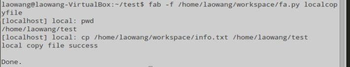
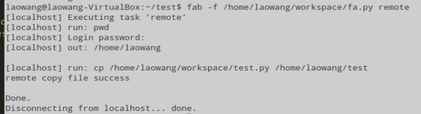

上节我们已经把python fabric安装配置好了。这节我们通过fabric编写批量执行服务器任务和自动化运维管理。
先介绍下fabric的特点，这个在官方文档里面已经介绍过:
1 代码可读性强，完全是python语言。
2 封装了本地、远程操，内置了一些方法。
3 可以根据需求灵活的定义参数。
4 角色定义，方便批量管理。
常用的配置参数：
env.host -- 主机ip，当然也可以-H参数指定
env.password -- 密码，打好通道的请无视
env.roledefs -- 角色分组，比如：{'web': ['x', 'y'], 'db': ['z']}
fab -l -- 显示可用的task（命令）
fab -H -- 指定host，支持多host逗号分开
fab -R -- 指定role，支持多个
fab -P -- 并发数，默认是串行
fab -w -- warn_only，默认是碰到异常直接abort退出
fab -f -- 指定入口文件，fab默认入口文件是：fabfile/fabfile.py
常用的函数：
local('pwd') -- 执行本地命令
lcd('/tmp') -- 切换本地目录
cd('/tmp') -- 切换远程目录
run('uname -a') -- 执行远程命令，一般会提示叫你输入密码。
sudo('/etc/init.d/nginx start') -- 执行远程sudo，注意pty选项
下面是写了一个远程复制文件和本地复制文件的函数。我把localhost既单做远程，还单做本地来操作。
#description:fabric代码测试。
from fabric.api import run,local,lcd,env,cd
env.hosts = ['localhost']
def localcopyfile():
'''本地文件copy操作'''
local('pwd')
local('cp /home/laowang/workspace/info.txt /home/laowang/test')
print 'local copy file success'
def remote():
'''远程文件拷贝操作'''
run('pwd')
run('cp /home/laowang/workspace/test.py /home/laowang/test')
print 'remote copy file success'
本地localcopyfile方法的执行结果：

远程remote方法的执行结果：

说明：
1 远程如果你没在代码里面设置好密码 的话，在执行脚本的时候，代码会提示让你输入密码，才能执行，而本地的话，则不会。
2 这个只是简单的演示，给运维的同学做一个铺垫。其实结合好linux自身的命令就可以做很多相关的批量执行服务器和自动化运维管理的任务了。